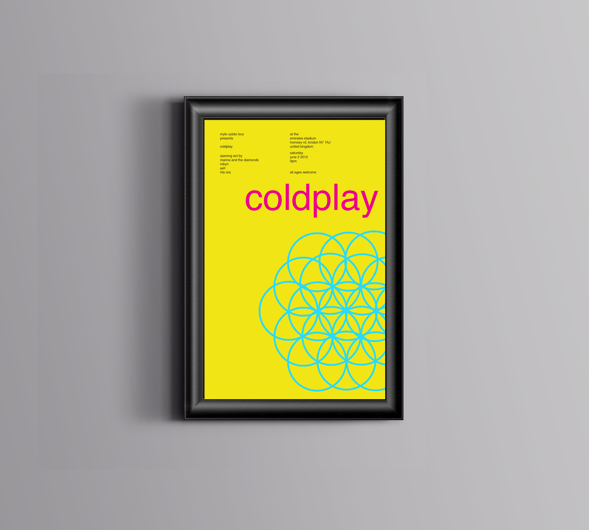
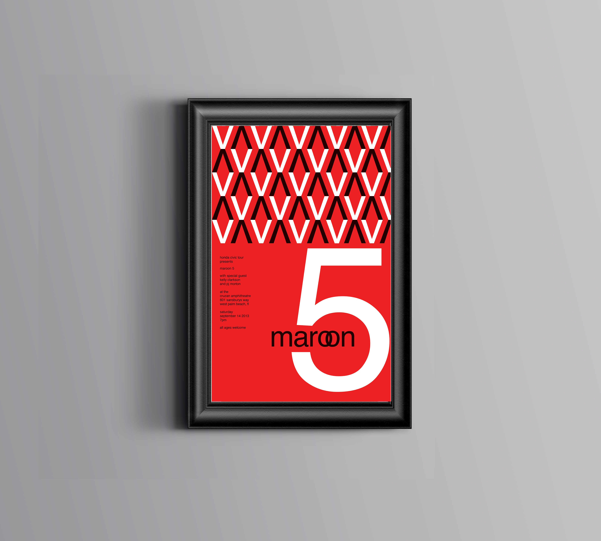
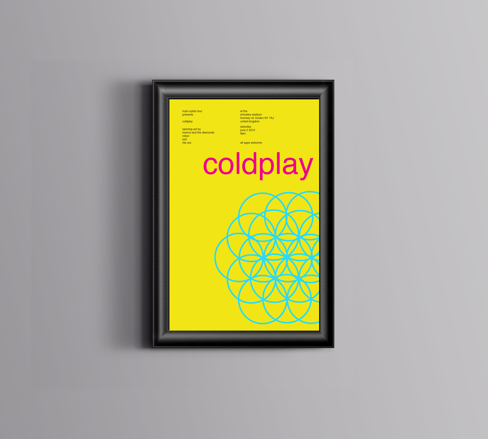
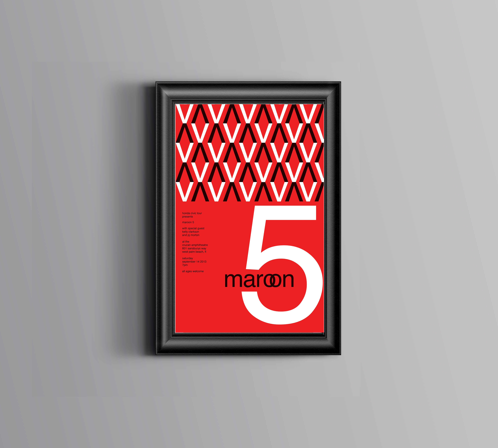
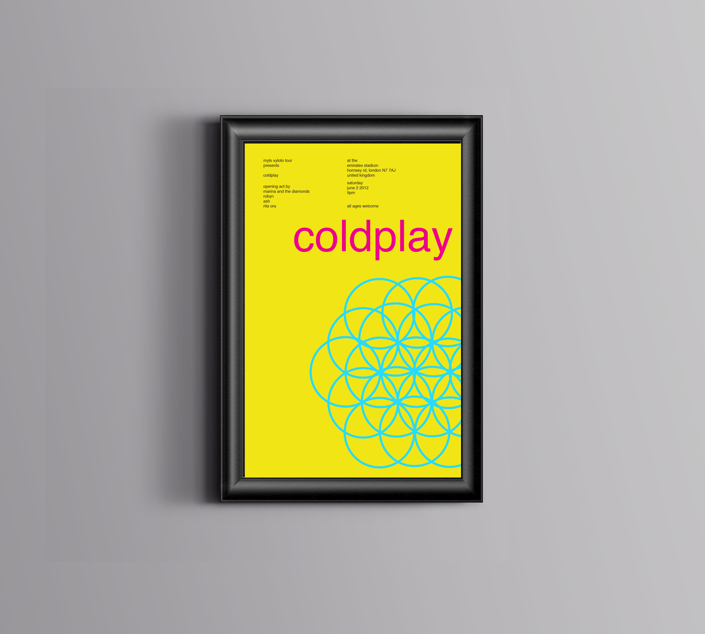
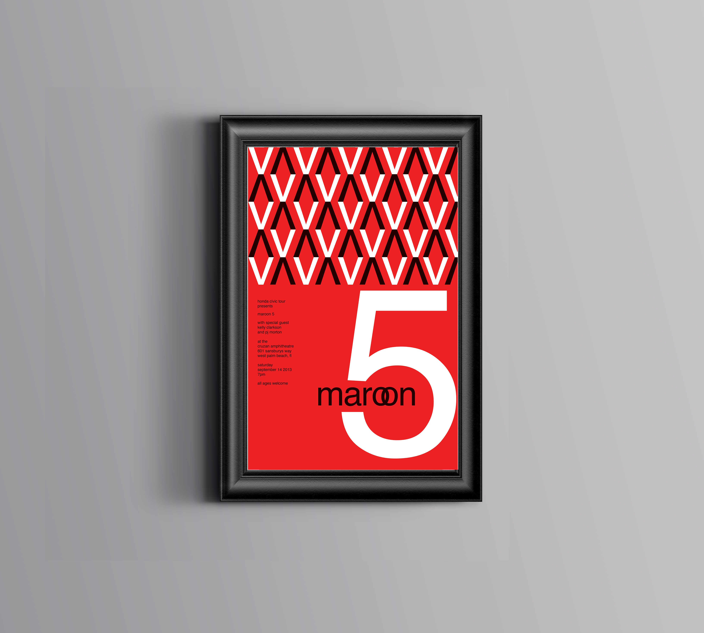

Typographic Poster
For this project we were challenged to design two musical typographic posters for different concerts using only lowercase helvetica typeface.
The project was inspired by pieces found on swissted.com
 



For this project we were challenged to design two musical typographic posters for different concerts using only lowercase helvetica typeface.
The project was inspired by pieces found on swissted.com

